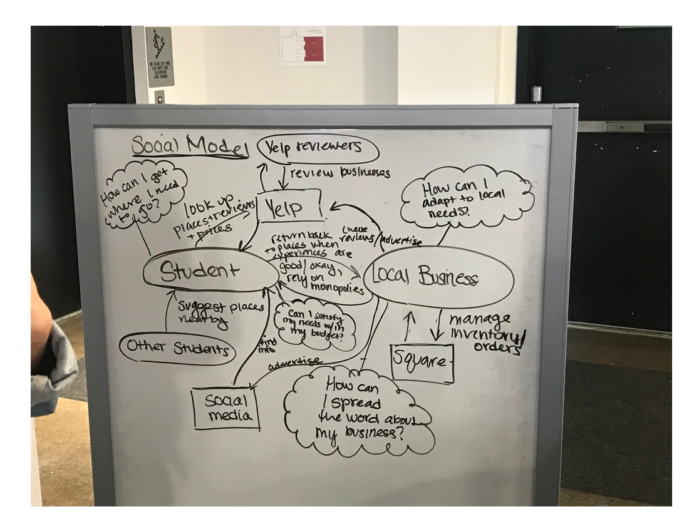

Type: A HCI research for local Ithaca business owners
Role: UX Designer and Researcher
Timeline: September 2017- December 2017
Overview:
Problem
Cornell students and Ithaca local businesses have experienced a growing divide filled with negative sentiments. Despite occupying the same small town, there seems to be little to no interaction between the two communities which is detrimental to both. Students tend to stay in their own bubble around campus and in Collegetown when local businesses such as store owners, restaurant owners, craftsmen and even farmers have so much to offer.
Understanding the Space
To help us understand the points of the opportunity of intervention in the current state of how local businesses operate, we conducted interviews with local business owners and students and mapped out some key findings. From these findings, we realized that our target audiences were too wide and in order to make a more significant impact on our design, we had to narrow down our audience to only business owners. 
Stay Tuned...
Full details on this project are on the way!